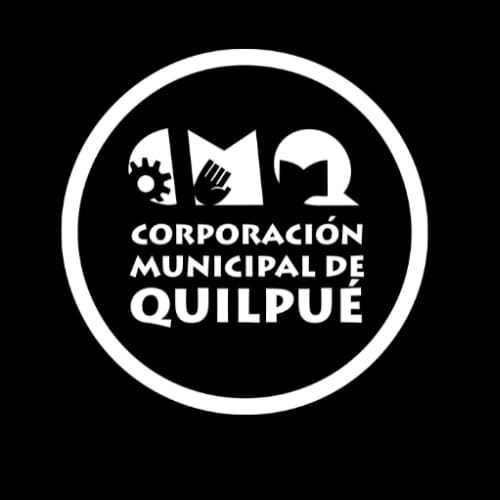
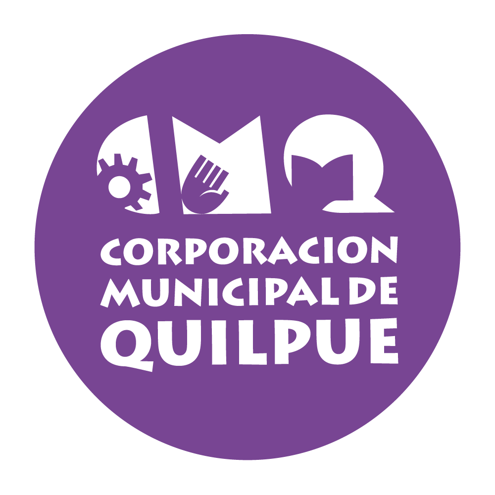
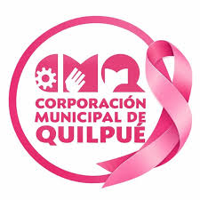

02
Logos: versiones, orden, espacio libre y tamaño mínimo
Principal a color
Sobre fondos claros
cmq-azul.png (#3661A2)Sobre fondos claros

Versión en blanco
Sobre bloques oscuros
cmq-blanco.jpegSobre bloques oscuros

Un color alternativo
Campañas de género
cmq-morado.png (#784593)Campañas de género

Especial Octubre
Mes Cáncer de Mama
cmq-rosado...jpegMes Cáncer de Mama
Respaldo MINSAL
Esquina sup. derecha
minsal.pngEsquina sup. derecha
- Orden: Logo CMQ primero (izquierda o firma principal). En portadas de presentaciones y documentos formales, logo MINSAL en la esquina superior derecha sin competir en tamaño con el de la Corporación.
- Espacio libre: Margen alrededor sin textos ni bordes equivalente a la altura de la palabra «QUILPUÉ» dentro del sello (1/4 del diámetro).
- Tamaño mínimo: En impresos, mínimo 20 mm (2 cm) de diámetro para CMQ y 18 mm de ancho para MINSAL. En pantallas, mínimo 90 px (CMQ) y 80 px (MINSAL).
03
Colores y proporción de uso (60 % Neutros · 30 % Principal · 10 % Apoyo)
Rojo MatroneríaPRINCIPAL
HEX: #BF210C
RGB: 191, 33, 12
CMYK: 0, 83, 94, 25 (confirmar con la imprenta)
Títulos principales, cifras clave, esquina curva y llamados a la acción.
Azul CMQAPOYO 1
HEX: #3661A2
RGB: 54, 97, 162
CMYK: 67, 40, 0, 36 (confirmar con la imprenta)
Color del logo CMQ. Subtítulos, bordes de cajas de números e íconos.
Rosa SuaveAPOYO 2
HEX: #FCEAE6
RGB: 252, 234, 230
CMYK: 0, 7, 9, 1 (confirmar con la imprenta)
Fondos de tarjetas con esquina curva, cajas de consejos y filas suaves.
Blanco PuroNEUTRO 1
HEX: #FFFFFF
RGB: 255, 255, 255
CMYK: 0, 0, 0, 0 (confirmar con la imprenta)
Fondo principal limpio («aire») y textos sobre bloques rojos o azules.
Gris Perla ClaroNEUTRO 2
HEX: #F4F6F9
RGB: 244, 246, 249
CMYK: 2, 1, 0, 2 (confirmar con la imprenta)
Fondo secundario de láminas y recuadros informativos suaves.
Gris Pizarra OscuroNEUTRO 3
HEX: #1F2937
RGB: 31, 41, 55
CMYK: 44, 25, 0, 78 (confirmar con la imprenta)
Todo el texto de párrafos, listas y tablas sobre fondos claros.
04
Combinaciones de texto y fondo permitidas y prohibidas
| Muestra visual | Combinación (Texto sobre Fondo) | Contraste exacto | Uso permitido |
|---|---|---|---|
| Texto de ejemplo | Gris Pizarra (#1F2937) sobre Blanco Puro (#FFFFFF) |
14,68:1 | Permitido para todo texto normal y títulos |
| Texto de ejemplo | Gris Pizarra (#1F2937) sobre Rosa Suave (#FCEAE6) |
12,62:1 | Permitido para cajas destacadas y consejos |
| Título Rojo | Rojo Matronería (#BF210C) sobre Blanco Puro (#FFFFFF) |
6,11:1 | Permitido para títulos, cifras y textos destacados |
| Texto Blanco | Blanco Puro (#FFFFFF) sobre Rojo Matronería (#BF210C) |
6,11:1 | Permitido para franjas, botones y bloques curvos |
| Subtítulo Azul | Blanco Puro (#FFFFFF) sobre Azul CMQ (#3661A2) o viceversa |
6,20:1 | Permitido para encabezados de tabla y subtítulos |
| PROHIBIDO | PROHIBIDO: Rojo Matronería (#BF210C) con Azul CMQ (#3661A2) |
1,01:1 (Nulo) | No usar juntos como texto/fondo ni para distinguir barras en gráficos sin etiquetas ni achurado. |
07
Adaptación de tu diseño de ejemplo y boceto de afiche (Secciones 5 a 11)
11) Ejemplo de Afiche
¿Cuándo pedir tu control de matronería?
01 Si sospechas embarazo o quieres planificarlo.
02 Para elegir o renovar tu método anticonceptivo.
03 Para realizar tu Papanicolaou (PAP) o examen de mamas.
10
REGLAS FIJAS (se aplican a todo material que se haga con esta tarjeta de marca)
- El logo no se redibuja, deforma, recorta, recolorea ni lleva efectos. Se respeta el orden de los logos y su espacio libre.
- No se inventan datos: teléfonos, direcciones, web, nombres, cargos, fechas, cifras ni citas. Si falta un dato, se escribe [POR CONFIRMAR].
- Todo texto debe leerse bien: contraste mínimo 4,5:1 (3:1 en títulos grandes) y letra suficientemente grande. El color nunca es la única forma de dar un mensaje: se acompaña de texto, ícono o forma.
- Fotos: solo reales y con autorización de quienes aparecen. Nada de texto ni logos encima de las caras. Bebés, niñas, niños o adolescentes solo con autorización escrita de sus padres o tutores y según la norma de la institución; si no la hay, se usan ilustraciones o fotos sin rostro. Nunca datos ni fotos de pacientes sin consentimiento.
- Una idea por pieza, poco texto y mucho aire. Si un texto no cabe, se acorta el texto; no se achica la letra por debajo del mínimo.
- Para usuarias: lenguaje claro, frases cortas, palabras de uso diario (nivel de lectura de 6.º básico) y pertinencia cultural. Sin indicaciones de medicamentos. El contenido clínico lo valida una matrona con la norma o guía vigente, y se cita la fuente.
- Impresos: medida exacta, 3 mm de sangrado por lado (el fondo se extiende más allá del corte), textos a 5 mm o más del borde, imágenes en buena resolución (300 ppp para impresos que se leen de cerca), PDF para imprenta y prueba de color antes del tiraje. Todo código QR se prueba con el celular.
- Redes sociales: tamaño exacto en píxeles, textos importantes dentro de la zona segura y una descripción de la imagen (texto alternativo) en cada pieza.
- No se copian marcas, personajes, logos ni diseños ajenos.
- Lo que entrega la IA es un borrador: antes de entregar, revisa la pieza con estas reglas y di qué debo confirmar. Si corresponde, se declara que se usó IA.
Lista breve de lo que debes confirmar
- Nombre formal en el pie de firma: Confirmar si se mantiene «Consultorio Quilpué» o «CESFAM Quilpué · Corporación Municipal de Quilpué».
- Teléfono y correo de contacto: Actualmente marcados como
[POR CONFIRMAR](solo están verificados Baquedano 960, Quilpué, Chile y https://cmq.cl/). - Logo CMQ blanco sin fondo: El archivo
cmq-blanco.jpegtiene fondo negro; conseguir versión.pngtransparente para usarlo sobre bloques rojos o azules. - Prueba de color en imprenta: Confirmar en imprenta los valores CMYK de
#BF210Cy#3661A2antes del tiraje.